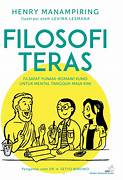
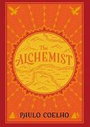
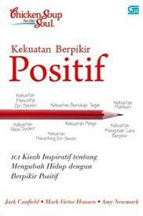

Welcome To My Blog
Biodata
Halo, nama saya Pearl. Saya seorang Mahasiswi S2 dengan minat yang besar di bidang penulisan buku. Blog ini saya buat sebagai tempat untuk berbagi pemikiran, pengalaman, dan inspirasi yang saya dapatkan dalam kehidupan sehari-hari.
Riwayat Pendidikan
SD Muhammadiyah Sapen
SMPN 5 Yogyakarta
SMAN 3 Yogyakarta
Universitas Gajah Mada
Rekomendasi Buku
“setiap buku memiliki keistimewaan tersendiri, yang dapat menginspirasi perubahan dalam hidup kita”



